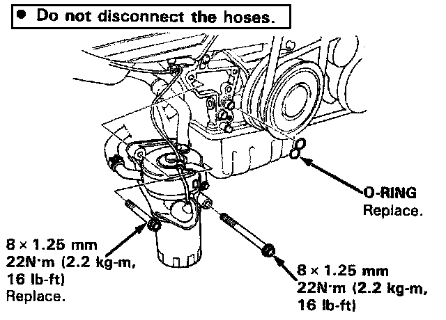
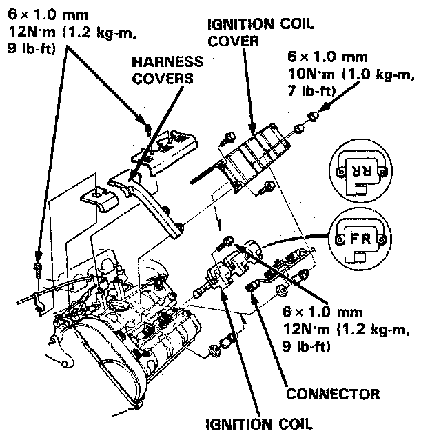
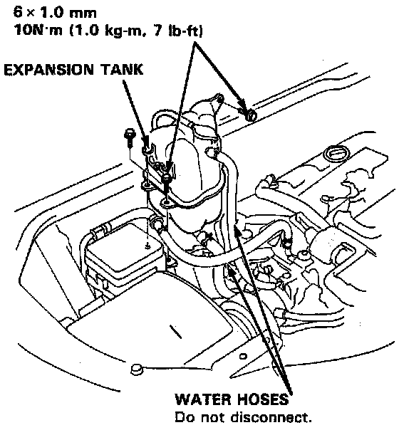
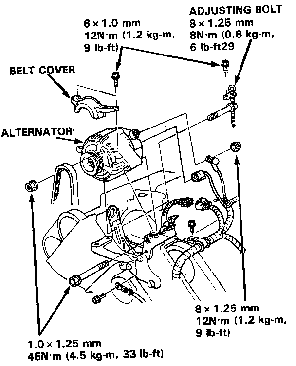
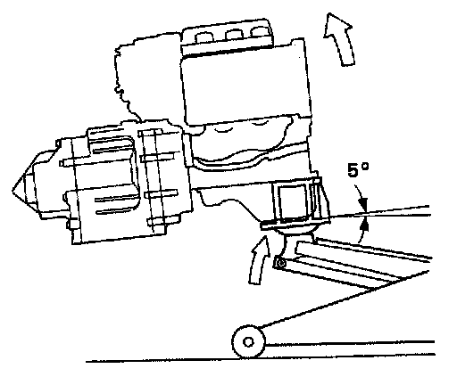
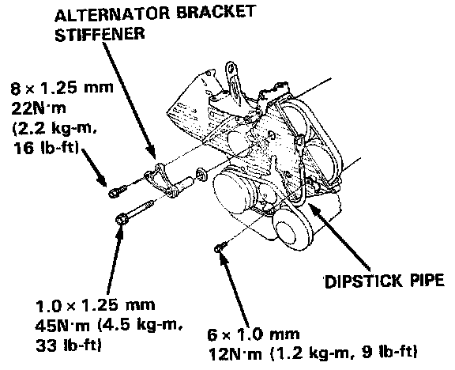
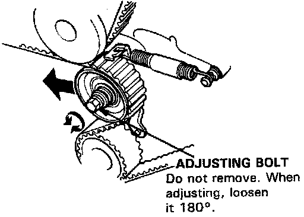

Removal
REMOVAL
CAUTION: Inspect the water pump when replacing the timing belt.
NOTE: Before removing the timing belt, mark direction of rotation if it is to be reused.
1. Disconnect the negative terminal from the battery.
2. Raise the car
3. Remove the right rear wheel/tire.


4. Remove the engine oil cooler base assembly.
NOTE: Do not disconnect the hoses.
5. Lower the car.
6. Remove the strut bar.
7. Remove the intake manifold plate.
8. Remove the top cover.
9. Remove the ignition coil covers.
10. Remove the injector cover and the wire harness covers.
11. Remove the ignition coils and the connecters.
NOTE: There are front and rear ignition coils and covers. They can be identified by the mark FF (front) or RR (rear) printed on them. When installing front and rear ignition coil covers, attach a rubber seal to the intake side.

12. Remove the expansion tank.
NOTE: Do not disconnect water hoses.
13. Remove the breather hose, and the air cleaner case.

14. Remove the connector, the terminal and the alternator.
15. Remove the bolt from the side engine mount, then push the side mounting bracket into the housing of the body.
16. Remove the transmission mount.
17. Remove the cylinder head covers.
18. Turn the crankshaft so that the No. 1 piston is at top dead center.

19. Install a brace under the engine, then tilt the engine approximately 5° using a jack.

20. Remove the alternator bracket stiffener.
21. Remove the air conditioning (A/C) compressor adjusting pulley and belt.
22. Remove the dipstick pipe mounting bolt, then remove the front and rear timing belt middle covers.
23. Remove the crankshaft pulley, then remove the timing belt lower cover.

24. Loosen the timing belt adjusting bolt 18° and release the belt tension.
NOTE: Push the tensioner to release tension from the belt, then retighten the adjusting bolt.
25. Remove the timing belt from the pulleys.
CAUTION: Do not crimp or bend the timing belt more than 90° or less than 25 mm (1 in.) in diameter.